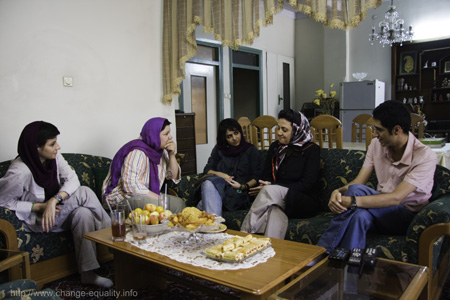

پذيرش > اخبار > محبوبه کرمی پس از 6 ماه بازداشت : هیچ یک از اتهامات وارده را نمی پذیرم

 محبوبه کرمی پس از 6 ماه بازداشت : هیچ یک از اتهامات وارده را نمی پذیرم محبوبه کرمی پس از 6 ماه بازداشت : هیچ یک از اتهامات وارده را نمی پذیرم
5 شهریور 1389 - - نسخه قابل چاپ
محبوبه کرمی از فعالین کمپین یک میلیون امضا که در تاریخ یازهم اسفند ماه سال 1388 با مراجعه نیروهای امنیتی به منزل مسکونیش بازداشت شده بود، اکنون پس از گذشت بیش از 6 ماه بازداشت موقت به قید وثیقه ای معادل با 500 میلیون تومان از زندان آزاد شده است.محبوبه کرمی از سوی شعبه 26 دادگاه انقلاب به تحمل 4 سال حبس تعزیری محکوم گردیده است.
محبوبه 6 ماه بازداشت خود در بند دو الف سپاه پاسداران و نیز بند نسوان زندان اوین را اینگونه روایت می کند.
یازهم اسفند 88 چه اتفاقی افتاد و به چه دلیل بازداشت شدید؟
یازدهم اسفند ماه من به همراه برادر و پدرم در خانه بودم.حوالی ساعت 11 شب زنگ خانه را زدند و کسی که پشت در بود به برادرم گفت که مامور برق است و از او خواست تا در را باز کند .برادرم به سمت در حیاط رفت و من از پنجره دیدم که سه مرد پشت در هستند و کاغذی را به برادرم نشان دادند. آنها همراه برادرم وارد خانه شدند و یکی از مامورین از بدو ورود شروع به تفتیش منزل کرد. و دیگری نیز از من خواست تا کامپیوترم را به او نشان دهم و گفت از اینجا به بعدش را خودش انجام می دهد.

روی برگه ای که دم در به برادرتان دادند چه چیز نوشته شده بود؟آیا حکم بازداشت شما را داشتند؟
روی برگه نوشته شده بود که اجازه بازداشت من و ضبط وسایل شخصی من نظیر کتاب ها ، کامپیوتر و موبایل من را دارند. اما مامورینی که به خانه مراجعه کردند اصلا توجهی به این موضوع نداشتند و تقریبا تمام وسایل منزل را تفتیش کردند و بخشی از وسایل برادرم را هم با خود بردند.
شما را بعد از بازداشت به کجا منتقل کردند؟
آن ها از من خواستند که همراهشان بروم و مرتب در جواب برادرم که علتش را جویا می شد می گفتند مسئله مهمی نیست و یک پرسش و پاسخ ساده است اما به هر حال اینکه سه مرد در نیمه شب به منزل ما مراجعه کرده بوند و قصد بازداشت من را داشتند و هیچ زنی هم همراهشان نیود باعث نگرانی من و خانواده ام بود. آن ها مرا سوار ماشین کردند و در نیمه راه چشم بندی به چشمانم بستند و سرم را زیر صندلی بردند و نهایتا من را به زندان اوین و بند دو الف منتقل کردند.البته من در ابتدا نمی دانستم آنجا بند دو الف و متعلق به سپاه است. به هر حال من را به سلول انفرادی بردند و بازجویی ها از صبح روز بعد آغاز شد.

قبل از شروع بازجویی ها به شما توضیح دادند که علت بازداشتتان چیست؟
متاسفانه هیچ کس هیچ توضیحی به من نمی داد.اولین باری که مرا به اتاق بازجویی بردند متوجه شدم که دیوار اتاق از آینه است و بعدها متوجه شدم که به آنجا اتاق آینه می گویند .زنی که مرا تا اتاق همراهی کرده بود من را در اتاق تنها گذاشت و رفت و من روی صندلی نشستم.بعد از چند دقیقه ناگهان مردی با فریاد وارد اتاق شد.بسیار خشن بود از ابتدای ورود به من گفت بلند شو، چه کسی اجازه دادی بنشینی.من بلند شدم و او مرتب فریاد می زد صاف وایسا، به دیوار تکیه نده و مرتب ناسزا می گفت.من واقعا مضطرب شده بودم.مدام فریاد می زد ایمیلت را بگو.پسورد ایمیلت را بده و بعد هم فحاشی می کرد.
خلاصه کسی در رابطه با اتهامم توضیحی نمی داد اما از مجموع سئوال ها می فهمیدم که دلیل بازداشت من ارتباط با "مجموعه فعالان حقوق بشر" است.چون مرتب در این رابطه سئوال می کردند.
گفتید شما به اتاقی که شما رو برای بازجویی به آن بردند اتاق آینه می گفتند، این اسم دلیل خاصی داشت؟
گفتم که دیوارهای این اتاق از آینه بود و بعدها فهمیدم زمانی که شما را توی اتاق تنها می گذارند یا حتی زمانی که بازجویی می شوید کسانی شما را از پشت آینه می بینند ولی شما آنها را نمی بینید.
بعد چه اتفاقی افتاد؟
بعد از بازجویی اول بازجو عوض شد و فرد جدیدی که آمد سعی می کرد برخورد بهتری داشته باشد.من تقریبا هر روز بازجویی می شدم اما در سلول انفرادی بودم. این وضعیت تا اواخر اسفند ماه ادامه داشت و من به شدت تحت فشار روحی بودم.یک روز از نگهبان خواستم که روسری ام را برای من بیاورد و به او گفتم که روی پتو پرز و مو چسبیده است و می خواهم از روسری به عنوان ملافه استفاده کنم.او هم روسری را آورد و من روسری را پیچیدم و آن را دور گردنم بستم و گره محکمی زدم.خسته شدم و اعصابم به شدت ضعیف شده بود.مرتب گریه می کردم و حال روحی بدی داشتم.گره را اینقدر محکم بستم که از هوش رفتم ،وقتی به هوش آدم دو نگهبان زن در حال مالش دادن گردنم بوند و بعد مرا به اتاق بازجویی بردند و بازجوی روز اول آمد و سعی کرد توضیح بدهد که همه اتفاقاتی که برای من افتاده است به دلیل عملکرد خود من است.
شما را با وجود اینکه اقدام به خودکشی کرده بودید نزد پزشک نبردند؟
مرا به درمانگاه بردند ولی اقدام خاصی نشد.من بیش از هر چیز به یک روانپزشک یا روانشناس یا مشاور احتیاج داشتم تا یک پزشک عمومی.
در این مدت آیا از امکان تلفن به بیرون از زندان برخوردار بودید؟
بله، تقریبا یک روز در میان اجازه تماس داشتم.یا با برادرم و یا با خاله بزرگم که به دلیل فوت مادرم به شدت نگران وضعیت من بود.
تا چه مدت در بند 2 الف بودید؟
نزدیک به 80 روز.البته در در این بین مدتی هم به انفرادی نسوان منتقل شدم و هر روز مرا برای بازجویی به 2 الف می آورند و دوباره به انفرادی نسوان باز می گرداندند.
دو سال قبل هم شما نوروز را در زندان گذراندید و متاسفانه همزمان با آزادی شما مادراتان چشم از جهان فرو بست، آیا امسال اجازه حضور در مراسم را به شما دادند؟
2 سال پیش در حالیکه مادر من به دلیل بیماری سرطان روزهای بسیار سختی را سپری می کرد بی دلیل مرا در زندان نگه داشتند و من از اینکه در روزهای پایانی حیات مادرم در کنارش باشم محروم شدم.نوروز امسال هم برخلاف تمام وعده های مساعدی که به من داده شد اجازه حضور در مراسم مادرم را به من ندادند و حتی لباس های مشکی که از خانواده ام خواسته بودم را به من ندادند .
تا این زمان موفق به ملاقات حضوری با خانواده شده بودید؟
بله یک بار.در روز اول نوروز موفق به دیدار حضوری با خاله و برادرم شدم.
بعد از بند 2 الف شما را به کجا منتقل کردند؟
من بعد از 80 روز از بند 2 الف به قرنطینه بند نسوان فرستاده شدم و 18 روز بدون هیچ تماس تلفنی با خارج از زندان در سلول انفرادی در قرنطینه بودم که همین امر موجب نگرانی شدید خانواده ام شده بود.بعد از آن در تاریخ 3 خرداد من را به بند عمومی نسوان منتقل کردند و تا روزی که آزاد شدم به همراه 25 زن دیگر در اتاقی موسوم به اتاق زندانی های سیاسی در بند مالی نسوان زندان اوین بودم.

با مراجعه به بند عمومی حال روحیتان بهتر شد؟
طبیعتا خیلی بهتر از وقتی بود که در زندان انفرادی به سر می بردم.اما اعصابم به شدت ضعیف شده بود و دچار افسردگی شدیدی بودم و مرتب گریه می کردم.
آیا در این مدت اقدامی درمانی در رابطه با افسردگی برای شما انجام شد؟
بعد از اینکه من یک درخواست نوشتم من را به پزشکی قانونی فرستادند و پزشکی قانونی تشخیص داد که دچار افسردگی هستم اما در نامه خود قید کرده بود که این افسردگی مانع تحمل نیست هر چند که ادامه حبس بیماری ایشان را تشدید می کند.به جز این اقدامی در رابطه با مشکل من صورت نگرفت.
در مدت بازداشت شما در بند عمومی خبری منتشر شد که شما را به برای عمل جراحی بینی به بیمارستان طالقانی بردند، اما شما اجازه عمل را ندادید و به زندان بازگردانده شدید.دلیل این عمل جراحی چه بود؟
من از کودکی دچار پلیپ بینی بودم و به همین دلیل خواب راحتی نداشتم. در زندان هم در خواب سر و صدا می کردم .گاهی خر و پف می کردم و گاهی حتی فریاد می زدم.طوری که هم اتاقی هایم باید مرا از خواب صدا می کردند تا جای سرم را عوض کنم یا به هر حال چاره ای بیاندیشم تا سایرین بتوانند بخوابند.من را به همین دلیل به بیمارستان طالقانی بردند و دکتر در آنجا تشخیص پلیپ داد و دستور عمل را صادر کرد.اما من قبول نکردم.چون زندان شرایطی نداشت که من بعد از عمل به آنجا برگردم و از طرفی هم من مشکلات جدی تری از پلیپ بینی داشتم که به آن رسیدگی نمی شد.
در این مدت دوبار هم تاریخ دادگاه شما به تعویق افتاد.علت چه بود؟
اولین تاریخ دادگاه من 7 تیر بود و به دلیل سالروز هفتم تیر ماه تقریبا دادگاه انقلاب حالت نیمه تعطیل داشت و کسی پاسخگوی ما نبود.بار دوم هم قاضی شعبه حضور نداشتند و به این دلیل دادگاه به تعویق افتاد.
اتهاماتی که در دادگاه شما در مقابل آن دفاع کردید چه بود؟
مسئولیت در تشکیلات و جمعیت غیر قانونی مجموعه فعالان حقوق بشر از طریق پذیرفتن مسئولیت اداره کمیته زنان این مجموعه با هدف برهم زدن امنیت کشور – فعالیت تبلیغی علیه نظام – اجتماع و تبانی با قصد ارتکاب جرایم علیه امنیت کشور- نشر اکاذیب
دادگاه شما را در همه موارد متهم تشخیص داده است؟
تنها از اتهام نشر اکاذیب مبرا شدم ودر بقیه موارد محکوم گردیدم.برای عضویت در مجموعه فعالان حقوق بشر به دو سال حبس و به دلیل اجتماع و تبانی و نیز تبلیغ علیه نظام مجموعا به دو سال حبس دیگر محکوم شدم.
پس شما در حال حاضر از سوی دادگاه بدوی محکوم به تحمل 4 سال حبس تعزیزی هستید.در حال حاضر چه تصمیمی دارید؟
قطعا به این حکم اعتراض خواهم کرد.البته در حال حاضر من به دلیل شرایط بد روحی به دستور پزشک باید بستری شوم ولی قطعا وکیل و خانواده ام در مهلت قانونی به این حکم اعتراض خواهند کرد.من هیچ یک از اتهامات وارده را نمی پذیرم.
ارسال به
بالاترین
،
توییتر
،
فریندفید
،
فیسبوک
در همين بخش :
 پروین ذبیحی برنده جایزه حقوق بشری سازمان غيردولتى اتريشى سودويند شد پروین ذبیحی برنده جایزه حقوق بشری سازمان غيردولتى اتريشى سودويند شد
پخش کارت پستال و بروشور در روز جهانی زن در تهران
تمدید زمان برای امضای بیانیهی جمعی از فعالان زن به مناسبت هشت مارس
مجوزی که در نطفه خفه شد
بیش از 2000 امضا در اعتراض به تبعیض های آموزشی به مجلس تحویل داده شد
ديگر بخش ها :
طرح یک میلیون امضا
|
مقالات
|
سایت نوشته ها
|
اخبار
|
گزارش كمپين
|
گفت و گو
|
علیه سکوت
|
كوچه به كوچه
|
نامه های شما
|
گزارش ویژه
|
گفتگو با اعضا
|
ویژه سالگرد کمپین
|
تصویر برابری
|
دل آرام علی
|
تریبون
|
مقالات
|
تاریخ شفاهی
|
خارج از چارچوب
|
کتابخانه
|
درباره کمپین
|
کمپین در شهرها
|
کمپین در بند
|
صدای تغییر
|
ویژه 22 خرداد
|
لایحه حمایت از خانواده
|
گالری
|
عشا مومنی
|
امیر یعقوبعلی
|
خدیجه مقدم
|
راحله عسگری زاده و نسیم خسروی
|
پروین اردلان،جلوه جواهری، مریم حسین خواه، ناهید کشاورز
|
زینب پیغمبرزاده
|
سعیده امین، سارا ایمانیان، محبوبه حسین زاده، ناهید کشاورز و همایون نامی
|
احترام شادفر
|
نسیم سرابندی زاده،فاطمه دهدشتی
|
وبلاگ مهمان
|
پرونده خرم آباد
|
دستگیری ها
|
مریم مالک
|
پرستو اللهیاری
|
مهرنوش اعتمادی
|
سمیه رشیدی
|
Other Languages
|
همراهان
|
«فراخوان کمپین ده روز با بهاره هدایت»
| English
|